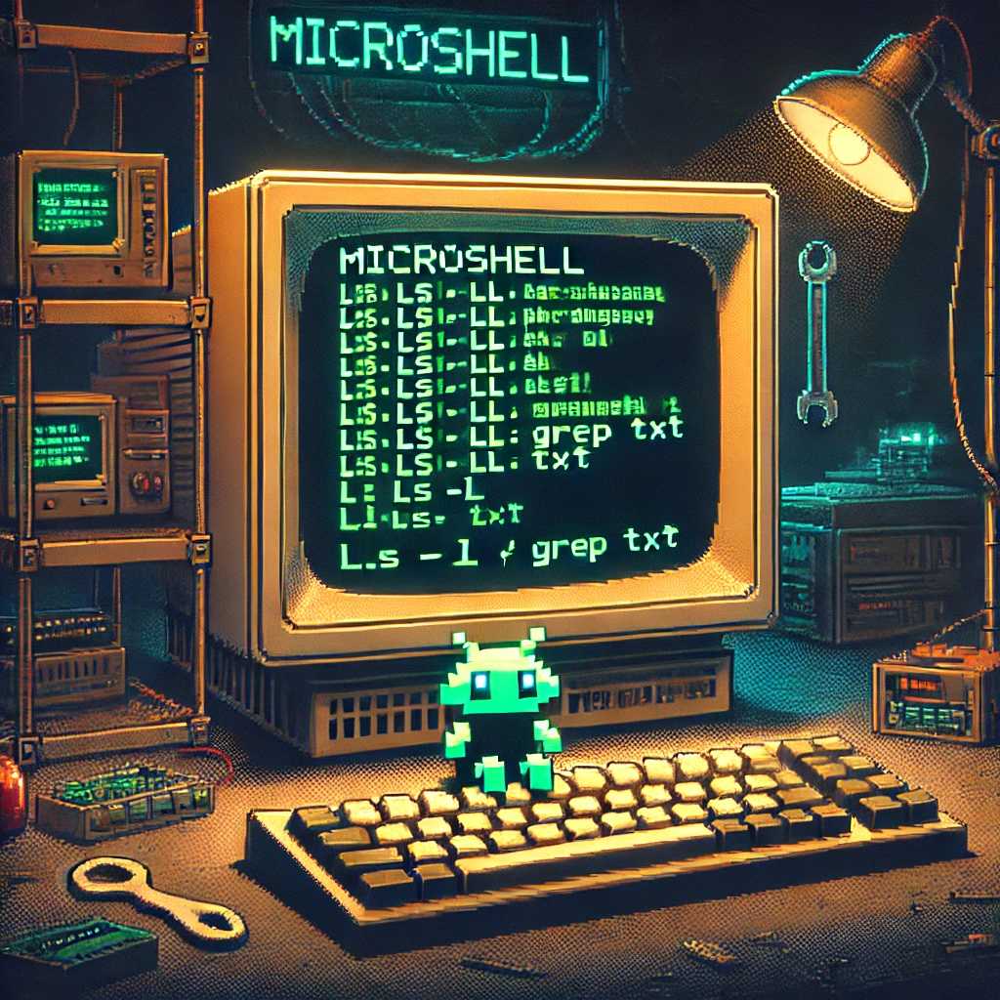

Net Practice is a networking project
designed to teach IP addressing and subnetting.
It challenges students to configure networks
by calculating valid IP ranges, subnets, and routes.
The goal is to understand network topology,
manage routing decisions, and prevent conflicts.
By solving various scenarios, students develop
a deeper comprehension of networking principles.